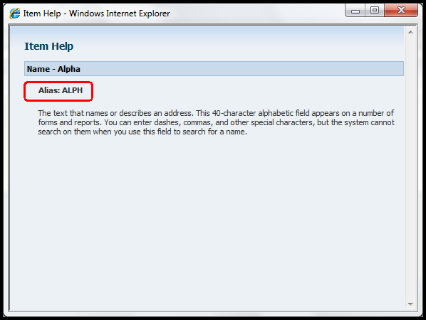
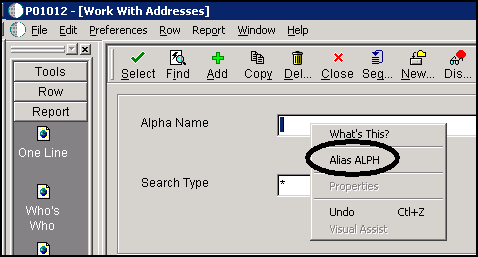

This document contains answers to some frequently asked questions on the Data Dictionary.
Questions and Answers
General Questions
Question 1: What is Data Dictionary?
Answer 1: The EnterpriseOne software Data Dictionary is a central repository containing data item definitions and attributes, just like a dictionary contains word definitions. Only ONE Data Dictionary is recommended for an EnterpriseOne software installation. Therefore, Data Dictionary is shared across all environments, i.e. Production, Prototype, Development. The data item definition defines how the item is used and includes information such as the type of item and its length. The Data Dictionary is active which means a change is effective immediately.
Question 2: Where can I find additional information on the Data Dictionary?
Answer 2: For additional information on Data Dictionary, refer to the JD Edwards EnterpriseOne Tools 8.98 Development Tools: Data Dictionary Guide located on the Oracle Technology Network.
In addition, refer to Document 1267422.1 E1: DD: Overview of EnterpriseOne Data Dictionary.
Question 3: How are the Data Item Attributes Used?
Answer 3:
The data item attributes determine how a data item appears on forms and reports (i.e. number of decimals and default value).
Validates data entry within an application.
Assigns column and row descriptions on forms and reports.
Provides glossary text for field-level help (i.e. on a form control, press the F1 key or use the Help "What's This" menu item)
Defines how data is stored in a table.
Question 4: Where is the Data Dictionary stored?
Answer 4: The Master Data Dictionary is stored in relational tables on the enterprise server:
F9200 - Data Item Master
F9202 - Data Field Display Text
F9203 - Data Item Alpha Description/Glossary Overrides Information
F9207 - Error/Workflow Message Information
F9210 - Data Field Specifications
F9212 - Smart Fields
F00165 - Data Item Glossary Text
Local specifications tables exist on every EnterpriseOne software Client and the Logic Server by path code under the /pathcode/spec directory. The local specifications are a replicated local copy of the data dictionary stored in the dddict and ddtext (.ddb and .xdb) files. Data Dictionary information does a Just in Time install (JITI) from the Master Data Dictionary tables to the Data Dictionary specification files the first time a data item is accessed by an interactive or batch application. This is true except for glossary group C data items that never JITI.
In the Web client environment, data dictionary information is built into the serialized object information for the applications that use the data dictionary items.
Question 5: Where is the Data Dictionary Item Glossary stored?
Answer 5: The Data Dictionary Item Glossary is stored in the F00165 Media Object Table. This table exists in its own Data Dictionary data source generally named Data Dictionary - Release Level, for example Data Dictionary - 900. The glossary information is stored using the Media Object data structure GT92002. This data structure is mapped to the Data Dictionary data source via Object Configuration Manager (OCM).
Media Object Item Glossary cannot be updated on Web client because it is a development task. It can be updated only from Windows Fat client
Question 6: What are Global Tables ?
Answer 6: Global tables, glbltbl (.ddb and .xdb), are part of the local specifications stored under the /pathcode/spec directory. Within these global tables, data item definitions for every EnterpriseOne software table are stored. The data item definition is dependent on Data Dictionary specs. JITI happens only the first time a table is accessed by the EnterpriseOne software. These global table specs are used at Runtime by EnterpriseOne software interactive and batch applications.
Question 7: What is the Process to Delete the Local Data Dictionary Specs and Global Tables on a Workstation?
Answer 7: When a problem exists on a specific workstation, information from the server may need to be updated through JITI to that workstation. To do this, delete the global tables and local data dictionary specs on the workstation.
Instructions for Deleting Global Tables
Log out of EnterpriseOne.
Open Windows Explorer.
Under the e900 directory (e812, e811, e810, b9, b7 on previous releases) open the pathcode folder, i.e. PD900.
Navigate to the 'spec' folder.
Select the following files
dddict.ddb
dddict.xdb
ddtext.ddb
ddtext.xdb
glbltbl.ddb
glbltbl.xdb
Delete the files that are selected. Either right click and select delete or use the delete key on the keyboard.
Log into EnterpriseOne. Several JITIs of the Global Tables and Data Dictionary will occur.
Question 8: Can Data Dictionary Applications be Run on a Web Client?
Answer 8: Beginning with EnterpriseOne 9.0, the Data Dictionary applications (P92001, P92002) can be run on the Web client.
Most functionality, with the exception of updating existing glossary text information, can be performed on the Web.
However, full functionality including the updating of existing glossary text information will still require the use of the Windows client. For known issues with Viewing Glossary Text using Data Dictionary on the Web in release 9.0 review review Document 865514.1 for additional details.
For releases prior to EnterpriseOne 9.0, a Windows fat client must be used to run the Data Dictionary applications.
Question 9: How Do I Deploy a Data Dictionary Item Change throughout my EnterpriseOne Environments?
Answer 9: Whenever a data dictionary change is made, this change will need to be deployed to the EnterpriseOne Fat clients, Web clients and Enterprise server. The method used to deploy the data dictionary change depends on where you are deploying the change to. Review Document 626511.1 E1: DD: Deploying Data Dictionary Changes.
Question 10: What is the Tip of the Day feature and where can it be used?
Answer 10: The Tip of the Day can be accessed using the Tip of the Day application P91500. The tables F91500 and F91510 are used by this application. The tips are associated with data dictionary data items. To add a new tip of the day, first add a Data Dictionary Item with the item glossary as the tip. After that associate the new tip to the appropriate category within the P91500 application.
Tip-Of-The-Day Text can only be attached to executables such as FDA, RDA, and Table Conversion design. They cannot be added to menus or applications. Due to this they are not available on the Web client.
Tips should be accessible to all EnterpriseOne users using a FAT Windows workstation. To show tips the following Registry key needs to be set to 1:
Question 11: How does Coexistence and the Data Dictionary work with Releases Xe and Prior?
Answer 11: In a Coexistence environment, the data dictionary is maintained in separate tables. Any change made to the OneWorld data dictionary must also be maintained manually in the World data dictionary. There is a World batch program (P99800) that compares World data dictionary to the OneWorld data dictionary and updates matching OneWorld data items with World data item information i.e. World overrides OneWorld . Therefore, this batch process must be run in Proof mode first to review the data items that will be overwritten with World information.
When creating co-existent data dictionary items, the custom data items should be named with a dollar sign prefix. To have the data items be coexistent with the AS/400 (as well as the tables they create using them) the data item alias size needs to be limited to a total of 4 characters ($xxx). The system code should be defined as a system code between 55 - 59.
Question 12: How to find all the DD item which has the Display Rule *RAB? (OR) Which table and column stored the Display Rule details?
Answer 12: Refer to table F9210 Data Field Specifications, Column FRDRUL. This column stores the Display Rules for each DD item
Question 13: While checking F9210 columns ERUL, ER01, ER02, HLP1 are not populated for all data items with display rules
Answer 13: Way back when the data dictionary tables were shared between World and OneWorld, there here columns in F9210 table that were specific to World and others that were specific to EnterpriseOne. If you bring up RP31 in the P9200 application, you can see on the Edit Rule tab that the UDC information is populated correctly. When you look at the F9210 table directly, ERUL, ERO1, ERO2 fields are not populated. These field are used by World. The ones used by EnterpriseOne are OWER, OER1, OER2, these are populated correctly and are the values that are shown on the Edit Rule tab in the P92001
Question 14: How to get the Table and Business View information to display when using Item Help?
Answer 14: There is a web runtime setting titled Enable Business View Info Display which is set in Server Manager. This needs to be enabled in order to see the additional table and business view information from the item help.
Navigate to Server Manager and select the HTML instance
Select Web Runtime
Search for Business
Check the box for Enable Business View Info Display
Click Apply
Go back to the main HTML instance screen
Stop and start the HTML service
Question 15: What is the form control field in "Error Message - Glossary Header Revisions" P92002|W92002D accessed from Form Exit "Appl Glossary" on "Error Messages - Glossary Items" P92002|W92002B used for?
Have entered a "Form Id" against the error message and change the text which creates records in Error Message table F9203. Is this used for applications to retrieve different error messages for the same error code for different Forms?
Answer 15: The “Form” field used in Appl Glossary screen (P92002|W92002D) is not to show different message texts by the same Error Code in different forms. Its use is different. This "Form" field value stored in F9203 is used for different purposes (e.g Glossary text translation,upgrade etc).
Data Item Questions
Question 1: What are the Types of Data Item Glossary Groups?
Answer 1:
D - Primary Data Elements
S - Secondary Data Elements
No different from a D glossary group data item.
Assigned by the Data Dictionary application when creating a group of Data Items.
C - Data Item Class
A way to create a class that is then used to group several data items that share the same attribute such as display decimals, i.e. QTYINV, CURRENCY
Data Items with this glossary group do not JITI
K - Smart Field
Special Data Items used for specific application report templates in Report Design Aid.
E - Error Messages
Used for error messages within EnterpriseOne software applications.
Y - Workflow Messages
H - Processing Option Glossary
NOTE: Only Data Items that are Glossary Groups D and S can be used as attributes of a table.
Question 2: What is the Difference between File Decimals and Display Decimals?
Answer 2: The difference between File decimals and Display decimals has to do with the way the data is stored in the database. You have to use one or the other and cannot use both. The majority of the standard data items use the option for Display Decimals not File Decimals.
File Decimals
File Decimals defines the number of decimals that are stored to the right of the decimal of the data item within the table. File Decimals must never be changed for existing EnterpriseOne data items
Example:
File Decimals = 2
Displayed by EnterpriseOne software as 1.23
Stored in Database as 1.23
Display Decimals
Display Decimals designate the number of decimals to display for a data item. Display decimals are for display purposes and are not stored in the database tables. Changes to the display decimals on a data item do not convert any existing data already in the tables.
EnterpriseOne supports the change for data items belonging to the QTYINV class and data item QNTY. For additional information, review Document 626475.1 E1: DD: Display Decimals Update for Data Item Class QTYINV and Data Dictionary Item QNTY
Display decimals should not be changed on other standard EnterpriseOne data items.
Example:
Display Decimals = 2
Displayed by EnterpriseOne software as 1.23
Stored in Database as 123 (multiply by a factor of 10 for each display decimal i.e. 100)
Question 3: What Attributes Should Not be Changed on an Existing EnterpriseOne Data Item?
Answer 3: The following items should NEVER be changed on a Standard EnterpriseOne Data Item :
Glossary Group
Data Type
Size
Class
File Decimals
Next Numbers
Display Decimals other than the supported change of data items in the QTYINV class and data item QNTY.
Upper Case Only
For additional details on what can and should not be changed on an existing Data Item, review Document 1267422.1 E1: DD: Overview of EnterpriseOne Data Dictionary.
Question 4: Why does the Edit Rule only display with the values of Y, N, 1, 0?
Answer 4: If a data item needs to be validated against a list of values, it should be defined to edit against a UDC table where the values can be entered. It is not possible to update the values in the list of values when selecting the Edit Rule for Value in a list.
With EnterpriseOne, the Edit Rule for Value in a list is hard-coded to the values of Y, N, 1, 0 and does not allow for any additional values to be entered.
Question 5: How is the CENTCHG Data Dictionary Item Used in EnterpriseOne?
Answer 5: JD Edwards EnterpriseOne stores calendar dates in Julian date format. The system allows two-digit dates to be entered to facilitate data entry. The system uses the default value of the data dictionary item CENTCHG (CenturyChangeYear) to determine the century to use for populating data tables. The system also uses this data dictionary item when automatically populating the default effective through and expiration dates in some data tables.
The data dictionary item CENTCHG performs two functions:
Controls how JD Edwards EnterpriseOne determines dates values. When a user enters a date value, the year associated with the date is based on the default value for the data dictionary item CENTCHG. The value in the Default Value tab of CENTCHG determines when the cutoff is between the 19th and 20th centuries. For example, when the default value is set to 40:
Dates entered with a year up to 40 are preceded by 20 for example, 2010, 2011, 2012, 2039 and so on.
Dates entered with a year after 40 are preceded by 19 and assumed to belong to that century for example, 1941, 1942, and so on.
Concatenates with the CTRY (Century) data item and the hard coded value of December 31 (12/31/) to populate expiration date fields with the last system date. For example, if CTRY is set to 20 and CENTCHG is set to 40, and users do not enter the expired date on the Print Messages application P40162, the system enters 12/31/2040. Many applications and tables use this default value if the date is not entered by users.
In releases Xe and ERP8.0, the default value for CENTCHG was set to 10. Any two-digit year entered that is less than or equal to 10 is treated as 20xx. Any two-digit year entered that is greater than 10 is treated as 19xx. In release 8.9, the default value was set to 15. In releases 8.10 through 9.0, the default value was set to 40.
Oracle recommends that this default value be increased for users in the Xe, ERP8.0, and 8.9 releases so that the software will, by default, supply effective through dates further into the future. Users who have data migrated from the Xe, ERP8.0, or 8.9 releases should also increase the value for the data dictionary item.
Refer to Document 882478.1 E1: 00: JD Edwards EnterpriseOne Default Century Dates - CENTCHG for additional information on this data dictionary value, the default value and the available date utility.
Question 6: What are Packed and Zoned for Numeric Data Items on the AS/400?
Answer 6: Packed and Zoned are data item storage types for the AS/400. Zoned is readable (numeric unpacked) and Packed is encrypted when using the AS/400 command DSPPFM to display the contents of a table.
When a Numeric data item with a length greater than five is used as a table column on the AS/400, the table column is created in Packed format; otherwise it is created in Zoned format. This occurs by default and cannot be changed by the user.
Question 7: Is there a Way to Force the Storage Type to be Zoned on the AS/400 for a Numeric Data Item with a Length Greater than Five?
Answer 7: By default a data dictionary item that is greater then five in length is created in packed, rather then zoned format. There is a workaround that can be used to create a data item of this size as zoned. Find the Data Dictionary alias AN8, click on COPY and make the appropriate changes to create the new custom data item. This new data item will be created in Zoned format when it is included in a table.
Question 8: How do I Compare the Values of Data Items in both the Data Dictionary Master Tables and Data Dictionary Spec Tables?
Answer 8: Add the entry below in the EnterpriseOne software Client JDE.INI : [Interactive Runtime] TAMMenus=Show
In FastPath, key in UTB for the Universal Table Browser:
Click File|Open Table to find and view the Data Dictionary master tables. Key in the Data Dictionary Alias in the QBE column FRDTAI.
Click File|Open Local TAM to view the list of Spec tables, double click on DDDICT.DDB or DDTEXT.DDB, key in the Data Dictionary Alias in the QBE column szDict.
Question 9: How can I find out which Data Items have been modified in Data Dictionary?
Answer 9: Run report R920022 - Print All Data Dictionary Adds and Changes. Add a new batch version with:
Data Selection on BC Date-Updated (F9200) greater than or equal to <desired date>
Data Sequence on Glossary Group (ascending), Date Updated (descending), Data Item (ascending)
The report displays the following fields from the F9200 - Data Item Master : Date Updated, DD Alias, User ID, Program ID, Workstation ID, Time Updated. Adding additional fields of Glossary Group, Product Code to the report and a Page Break on Glossary Group can be done by modifying the report using Report Design Aid:
Section|Quick Section - move & position Glossary Group, Product Code under Selected Columns
Section|Data Sequence - section data sequencing tab: move Glossary Group, Date Updated, Data Item in this order; define sort properties tab : check level break and page break for Glossary Group
If a Full Detailed Listing of the Data Item is required, run report R92400 with data selection for the specific data item.
Question 10: How is the field Item Occurrences used on a Data Dictionary item?
Answer 10: The Item Occurrences field in the Data Dictionary is for use in creating data items for array elements. The purpose of this field is simply to allow for simpler data entry and maintenance.
When a new Data Dictionary item is created that has a number in the Item Occurrences column, the Data Dictionary application will automatically create that number of items with the same attributes as the parent item. The data item names are configured using the parent data item name with a number appended to them. For example, if the parent item name is "ABC", the child items would be "ABC1", "ABC2", etc. The numeric character is appended to the end of the Data Item, Alias, and description fields. The parent data item generally has a glossary group of "D" for Primary Data Elements. All children data items are created with a glossary group of "S" for Secondary Data Elements.
A data dictionary item that is created as a child of another item is treated no differently then any other data dictionary item at runtime. The only difference is within the Data Dictionary application. The Data Dictionary application does validations to ensure that the attributes (size, type, etc.) are consistent between the child items and the parent item. If changes are made to the parent item, those same changes are duplicated to the child items.
For additional information about the use of these data items in a table, refer to Document 644453.1 E1: TDA: Data Items with Item Occurrences and Their Use in a Table.
Question 11: Is it possible to mask the display of data for a data item?
Answer 11: Beginning with EnterpriseOne Release 9.0 and Tools Release 8.98, a new masking data dictionary display rule of LMASK is provided for the Web Client and UBE reports. Items that use the new display rule are displayed partially with leading wildcard characters (******). For additional information on the LMASK display rule, refer to Document 637035.1 E1: DD: Data Dictionary Display Rules MASK and LMASK
Question 12: Where is a change in the Alpha Description under General Information reflected?
Answer 12: After the Data Dictionary item change is replicated, it is reflected in the Business View Column Description in:
Data Selection/Sequence screen
Event Rules Design - after editing the ER statement with the original description and clicking OK to refresh the ER specs
Question 13: How can I see the Data Dictionary Alias for a field on a form?
Answer 13: On the Web Client, the Data Dictionary Alias can be seen by selecting the Item Help button on the toolbar within any application and then selecting the field on the form. This will open the Item Help Window and display the Data Dictionary Alias and a description of the data item on the form

On the Windows Client, placing ShowAlias=1 in the [EVEREST] section of the jde.ini allows for the Alias of form controls to be displayed by the runtime engine. The Data Dictionary Alias associated with a specific form control will be displayed when a user right-clicks on the control

Question 14: How do I print a list of Data Dictionary Items?
Answer 14: The report R92400 - Print Full Detail for a Data Dictionary item, with Processing Option to Print Glossary Text and R92401 Print Specifications of Error/Workflow messages (i.e. Error Level & Data Structure Templates) are available to print a list of Data Dictionary Items. If Glossary Text is required on the report use the R92400.
Question 15: The Ampersand (&) sign is not showing up in the Data Dictionary description?
Answer 15: Use two Ampersands (&&) as a workaround because an & is used by Microsoft OS to specify which character to underline in menus and static text.
Question 16: How can I locate a data dictionary item of a specific size?
Answer 16: To locate a data dictionary item of a specific size, you can use the Universal Table Browser (UTB), open the table F9210 - Data Field Specifications, then search based on the DTAS - data item size field. You can also put other parameters into the QBE line to narrow down the search based on data type, class, product code, etc.
Question 17: Adding or Changing a Data Dictionary Item in P92001 results in Error 012G Attributes Different From Class.
Answer 17: The error occurs when the item specifications (e.g. data type, size, file decimals, display decimals) of the added/changed data item are different from the item specifications of the Class data item that is specified on the added/changed data item.
If the Class data item is not blank, inquire on the Class data item and ensure that the attributes of the added/changed data item match those of the Class data item to resolve the error.
If the Class data item is blank, there is an invalid record in F9200 with blank in column FRDTAI and C in column GG (glossary group) and this record must be removed to resolve the error. Since this record cannot be retrieved using P92001, it should be deleted from F9200 using SQL.
Question 18: A data item of Integer type is defined with size 11, why are only 5 digits allowed when it is used in an application or processing option?
Answer 18: Issue has been reported in BUG 11051461 Alias WOPID 5 digits maximum. Per Development, it is working as designed. Integer data type, by design, always has a maximum display length of 5, hence any data dictionary item defined with a data type Integer will accept a number up to 5 digits maximum.
Question 19: Why do numeric data items allow more digits to be entered in the field on the Web Client than the actual size defined for the Data Dictionary item?
Answer 19: When entering a value in a numeric data dictionary item, the field allows for more digits to be entered in the field then the actual size defined for the Data Dictionary item. For example, the numeric data dictionary item of size 2 (e.g. AAPI) when used in an application, allows the user to enter 3 digits when run on web client. However, when the value is actually saved to the table, only the size of the data dictionary item (2 digits) is saved to the table.
The system allows one extra character in length in order to show the trailing sign for the value. This is by design and functions differently on the Web Client versus on the Windows, FAT client.
As a workaround use the display rule properties (e.g. CODE Z) to modify this behavior.
IAR Bug 12700622[This section is not visible to customers.]
Question 20: Why does a 12 character data item used in a Processing Option Template truncate the entered value to 11 characters?
Answer 20: This issue occurs due to the control type defined for the data dictionary item. The data item used in the processing option template, APID, is defined as a User Defined Code (UDC) Edit type. Within the EnterpriseOne software, any data item defined as a UDC edit type is limited to 11 characters regardless of the length defined for the data item. Only 11 characters are supported for any data item defined as a UDC Edit type.
To resolve this issue, use a data dictionary item other then APID that is defined as a generic edit rather then a UDC edit. This will allow for the use of all characters without truncation occurring.
Question 21: CMDE and MTVL are set to 'Y' in the F0092 but no way to Set in P0092
Answer 21: This field is not used in the P0092 User Profile application and it does not exist on any form. The default value of 'Y' is set by the data dictionary default value and does not cause the system to perform (or not perform) any action while the user is in EnterpriseOne. This field is not used by the EnterpriseOne software. It is most likely a field that was taken from the World coexistence days.
Question 22: For a numeric Grid Column, is it possible to have the negative sign appear on the left of the numbers instead of the right?
Answer 22: The negative sign-in amounts is governed by the Display Rule in Data Dictionary configuration.
For example the LT1 Amount field in P09200 (DD alias AA) has a Display Rule configured as CODE K. This relates to the following:
K Commas - No Zero Bal - `-` .9030- 123.456,7891 (where .9030- is an example of data showing the negative sign on the right).
Other codes will allow the representation of the negative signs on the left, for example:
N Commas - Zero Bal - float - -.9030 123.456,7891 .0000 O Commas - No Zero Bal - float - -.9030 123.456,7891 P No Commas - Zero Bal - float - -.9030 123456,7891 0.0000 Q No Commas - No 0 Bal - float - -.9030 123456,7891
Full details on all the available Display Rule codes can be found in Document 1061562.1 E1: RDA: Frequently Asked Questions on Edit Codes Available within a Report (UDC 98|EC)
The modification can be made either at global Data Dictionary level, that will affect all applications / objects using that data item. Or it can be made for individual applications (batch / interactive)by modifying the specific properties of the Data Item within the application. For example:
Open P09200 in Form Design Aid.
Select Form W09200A - Work With Account Ledger
Right click on field LT1 Amount and select Properties
Click on tab Overrides - Data Dictionary Overrides
In the Disable section, check the Display Rule check box. This operation will override the currently configured Display Rule (ie. CODE K) for the specific Data Item.
Question 23: Why the UDC lookup is not working even though the UDC has been selected under the edit rule tab in Data Dictionary?
Answer 23: If the Visual Assist tab is disabled or no search form is selected under it, regardless of having a UDC set up for the data item the engine will not look up the UDC values.
Vocabulary Overrides, Jargon Code and Languages
Question 1: How can I reset Vocabulary Overrides for a specific data item for All APPLs and UBEs?
Answer 1:As a pre-requisite, the Cross Reference for APPLs and UBEs must be built. This build is a row exit available from the application Cross-Reference Facility (P980011)
From the Work with Vocabulary Overrides application (P9220), there are 2 form exits :
Data Item Search - View all Forms using a particular data item
Cross Reference - Display all applications and reports using a particular data item (R9220). For additional information, review Document 626466.1 E1: DD: Vocabulary Overrides for how to Use R9220 Vocabulary Overrides Data Item Locator Report.
To reset the Vocabulary Overrides, from P92001 Data Dictionary-Work with Data Items, there are 2 row exits (which are enabled only when cross reference info exists for APPLs and UBEs)
Reset FDA - UBE:R9225, Version:XJDE0001
Reset RDA - UBE:R9226, Version:XJDE0001
These two UBE reports will reset the Vocabulary Overrides to the Data Dictionary Row Description and Column Title of the Selected Data Dictionary Item in all Applications and UBE reports for the Central Objects Specs specified in the Processing Option (PO).
NOTE: Revise the Processing Option values and Data Selection for the XJDE0001 version of these reports before submitting them through the row exits since it does not prompt for the Processing Option values and the Data Dictionary application is hard-coded to submit version XJDE0001.
Run the reports in Proof Mode first to list all applications and reports that will be impacted. Then run the reports in Final mode to update the Central Object Specs.
NOTE: The UBE report must be submitted from the Row Exit in P92001.
Deploy the Data Dictionary change throughout EnterpriseOne before deploying the Vocabulary Overrides changes . An update package must be built for all the applications and UBE reports listed in the two reports R9225 and R9226 in order to deploy the changes.
Question 2: How can I get to Jargon Code for a Data Item?
Answer 2: To get to Jargon Code for a Data Item:
Go to Work with Data Dictionary Items.
Inquire on the appropriate data item.
Select the data item and click on Descriptions Overrides from the row exit.
Question 3: How can the Data Selection Description of a Data Dictionary Item be changed for an Alternate Language?
Answer 3: There are two ways to do this:
Option 1
If you are signed in as a user with a language preference of French:
Go to P92001-Work With Data Dictionary Items.
Inquire on the item in Work With Data Items and select the item
In the Data Item Specifications, change the general information description (field DSCA) that already exists in French for the data item.
This change will only impact the French data dictionary description that displays in the data selection as the change was done when signed-in as a user with a language preference of French.
Option 2
If you are signed in as a user with a language preference of English
Go to P92001-Work With Data Dictionary Items.
Inquire on the item in Work With Data Items and take the Row Exit Description Overrides.
On Work with Data Item Descriptions, highlight the row you would like to change based on the language and take the row exit Glossary. This only will work for a specific language, not for a combination of language and jargon code. Jargon description is not implemented in data selection screen, review Document 2136608.1 E1: DD: Description Override Entered for Jargon Code does not Display in Data Selection Window
In the Data Item Glossary, there is one field in the header that is unprotected and unlabeled. That field is DSCA and changing that description will change the description that displays in the UBE data selection for the language and jargon code selected
After you change to the data dictionary French general information field (DSCA), review Document 626511.1 E1: DD: Deploying Data Dictionary Changes to deploy the Data Dictionary change
Note: For Tools Release 8.98.4.*, there is a Bug 12771892 reported on Data Selection Description not displaying correctly for Language users. Bug is fixed in Tools Release 9.1 and above
Question 4: Why does the glossary text in the Preview Glossary or Preview HTML Glossary row exits not match the text in the row exit Glossary on a data item with glossary text overrides for Language, Jargon code or Form name?
Answer 4: Issue is reported in BUG 11791230 TEXT IN PREVIEW GLOSSARY/PREVIEW HTML GLOSS DOES NOT MATCH DEFINED GLOSSARY TEXT and is closed as "Working as Designed" by Development with the reason entered in Enhancement BUG 11801015
Error Message Data Dictionary Items
Question 1: How to create Custom Error Message without Text Substitution?
TAB: Item Specifications Alias: It is an alphanumeric code up to 8 characters long that does not allow blanks or special characters such as %, &, or +. Start first two characters as the system code value (any number from 55 through 59) e.g 55xxxx Product Code: System Code from 55 - 59 Product Code Reporting: System Code from 55 - 59 Description: type in desired text Error Level: select appropriate level from visual assist
TAB: Item Glossary Item Glossary: type error glossary text
TAB: Data Structure Template Select None
Question 2: What are the steps to get a glossary text change and/or error level change on an error data dictionary item to take effect in an application on the web client?
Answer 2: The following steps were tested consistently in release 9.0 for the DV900 pathcode :
In Server Manager, stop the Enterprise Server and the DV900 Jas Instance
On Enterprise Server, for the specs files (dddict, ddtext, glbtbl - .ddb & ,xdb) in directory <\dv900\specs\>, delete or move these files to a new folder
In Server Manager, start the Enterprise Server and the DV900 Jas instance.
Question 3: Why does Set Control Error/Set Grid Cell Error system function fail to find a data dictionary item and issue the error messages "Error Code does not exist"?
Answer 3:
The "Error Code does not exist" is issued because in the event rule mapping of the system function Set Control Error in Form Design Aid (FDA), the Error Code parameter is entered as literal 508z in lowercase, it should be entered as literal 508Z in uppercase.
When the Error Code is created in P92002 Error Messages, it is created in uppercase as 508Z.
BUG 11054209 Set Control Error parameter is created requesting lowercase entry is not allowed in the Error Code parameter of Event Rule system functions Set Control Error and Set Grid Cell Error
Another cause of the "Error Code does not exist" symptom is due to incorrect definition of the Data Dictionary data source in OCM or Database Datasource in EnterpriseOne. Verify that the Data Dictionary data source has been set up correctly in OCM and Database Datasource in both the System and ServerMap datasources.
Question 4: Why do we see Data Dictionary errors in server logs for custom DD items, when on a local client these work fine?
We have developed a number of new Data Dictionary items for a custom report in DV812 that runs fine on a local client, but does not run on the Enterprise Server. The logs from the server show errors similar to the following:
Why does this report not run successfully on the Enterprise server and why am I receiving Data Dictionary errors ?
Answer 4: These errors are generated by the Metadata kernel when more than one Data Dictionary is used in EnterpriseOne. The metadata kernel resolves the location of the Data Dictionary for objects run on the server by using the Default Environment in the Security section of the Server JDE.INI, thus bypassing the OCM. In this particular case, since the JDE.INI pointed to PS812 (Pristine environment) as the Default Environment, the metadata kernel was unable to find the custom data dictionary item 55RICA in the Pristine Data Dictionary
SOLUTION:
After modifying the JDE.INI to any other environment using the shared data dictionary (DV812, PD812, etc.) the reports run correctly. As confirmed by Development, it is NOT recommended to use PS812 as the default environment in the Security section of the Server JDE.INI